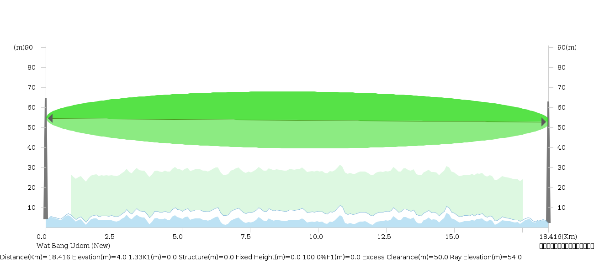

ระยะทาง (Distance)
18.416 km
ความถี่ใช้งาน (Frequency)
7.5 GHz
Free Space Loss (FSL)
135.33 dB
ระดับสัญญาณรับ (RSL)
-36.21 dBm
Fade Margin (Thermal)
42.78 dB
ความพร้อมใช้งาน (Availability)
99.999%
ภาพตัดขวางแนวคลื่นและพื้นที่ Fresnel Zone ลำดับที่ 1 (1st Fresnel Zone Path Profile)

รูปที่ 1: ภาพจำลองโพรไฟล์แนวสายตา (Line-of-Sight), ลำคลื่น Fresnel Zone ลำดับที่ 1 (100% F1 = 17.32m กึ่งกลางเส้นทาง), ความสูงเสา 50.0m ทั้งสองสถานี และความโค้งของโลก K=4/3
1. ข้อมูลพิกัดสถานีและความสูงเสาสื่อสาร (Site & Antenna Parameters)
| พารามิเตอร์ (Parameter) |
สถานีต้นทาง A: Wat Bang Udom (New) |
สถานีปลายทาง B: ที่ว่าการอำเภอหัวไทร |
| ชื่อสถานี (Site Name) |
Wat Bang Udom (New) |
ที่ว่าการอำเภอหัวไทร (Hua Sai) |
| ละติจูด (Latitude - φ) |
8.205790° N |
8.040590° N |
| ลองจิจูด (Longitude - λ) |
100.253740° E |
100.274670° E |
| ระดับความสูงพื้นดินจากน้ำทะเล (Ground Elevation) |
4.00 m |
2.19 m |
| ความสูงเสาสื่อสาร (Tower Height) |
50.00 m |
50.00 m |
| ความสูงสายอากาศ (Antenna Centerline Height) |
50.00 m |
50.00 m |
| รุ่นสายอากาศ (Antenna Model & Size) |
A7WD09MAC-3NX (เส้นผ่านศูนย์กลาง 0.9 m) |
A7WD09MAC-3NX (เส้นผ่านศูนย์กลาง 0.9 m) |
| อัตราขยายสายอากาศ (Antenna Gain) |
34.90 dBi |
34.90 dBi |
| มุมแอซิมัทหันทิศสายอากาศ (Antenna Azimuth) |
172.85° (ทิศใต้ SSE) |
352.85° (ทิศเหนือ NNW) |
| มุมก้มเงยสายอากาศ (Vertical Tilt Angle) |
-0.01° |
+0.01° |
2. ข้อมูลพารามิเตอร์คลื่นและการสูญเสียในเส้นทาง (RF Propagation & Path Loss)
| พารามิเตอร์ทางวิศวกรรม (Engineering Parameter) |
ค่าที่คำนวณได้ |
หน่วย |
คำอธิบายประกอบ |
| ระยะทางผิวโลก (Path Length / Distance) |
18.416 |
km |
คำนวณตามเส้นทาง Geodesic Great-Circle |
| ความถี่พาหะคลื่นวิทยุ (Carrier Frequency) |
7.5 GHz (7,500 MHz) |
GHz |
ย่าน Microwave 7.5 GHz Band |
| โพลาไรเซชัน (Polarization) |
Dual-Polarized (H+V) |
- |
รองรับการส่งคลื่นทั้งแนวนอนและแนวตั้ง |
| Free Space Loss (Lfs) |
135.33 |
dB |
Lfs = 92.45 + 20 log10(f) + 20 log10(d) |
| การสูญเสียในชั้นบรรยากาศ (Atmospheric Absorption) |
0.19 |
dB |
การดูดกลืนของไอน้ำและก๊าซออกซิเจน (0.0103 dB/km) |
| การลดทอนสัญญาณจากฝนตกหนัก (Rain Attenuation) |
12.03 |
dB |
อ้างอิง Rain Region N (อัตราฝน 95 mm/hr ณ 0.01%) |
| Diffraction Loss & Field Margin |
1.00 |
dB |
แนวสายตาปลอดสิ่งกีดขวางสมบูรณ์ |
| ระบบสำรองและเทคโนโลยี (Configuration) |
Protection 2+0 / XPIC |
- |
Cross-Polarization Interference Cancellation |
| รุ่นอุปกรณ์วิทยุ (Radio Model) |
7G_XMC3E_32Q_28M_112M |
- |
Channel Bandwidth 28 MHz |
3. สมรรถนะแยกตามโหมดการมอดูเลตและแบนด์วิดท์ (Adaptive Modulation Performance)
| Modulation Mode |
Throughput |
TX Power |
EIRP |
RX Signal (RSL) |
RX Threshold |
Fade Margin |
Annual Availability |
| 512QAM |
424.0 Mbps |
28.5 dBm |
63.4 dBm |
-38.21 dBm |
-60.3 dBm |
22.08 dB |
99.989502% |
| 256QAM |
380.0 Mbps |
28.5 dBm |
63.4 dBm |
-38.21 dBm |
-63.6 dBm |
25.38 dB |
99.993921% |
| 128QAM |
334.0 Mbps |
30.5 dBm |
65.4 dBm |
-36.21 dBm |
-66.6 dBm |
30.38 dB |
99.996807% |
| 64QAM |
282.0 Mbps |
30.5 dBm |
65.4 dBm |
-36.21 dBm |
-69.9 dBm |
33.68 dB |
99.997934% |
| 32QAM (Base Mode) |
224.0 Mbps |
30.5 dBm |
65.4 dBm |
-36.21 dBm |
-79.0 dBm |
42.78 dB |
99.999486% |
📌 ข้อสรุปการประเมินทางวิศวกรรมโทรคมนาคม (Engineering Evaluation Summary):
เส้นทางวิทยุไมโครเวฟระหว่าง Wat Bang Udom (New) และ ที่ว่าการอำเภอหัวไทร มีระยะทาง 18.416 km โดยเมื่อติดตั้งสายอากาศที่ระดับความสูง 50.0 เมตร ทั้งสองสถานี แนวคลื่นวิทยุจะมีระยะพ้นสิ่งกีดขวาง (Clearance) เหนือภูมิประเทศและยอดไม้ตลอดเส้นทางอย่างสมบูรณ์แบบ (100% 1st Fresnel Zone ปลอดโปร่ง) ระดับสัญญาณรับที่ -36.21 dBm ให้ Thermal Fade Margin สูงถึง 42.78 dB ส่งผลให้อัตราความพร้อมใช้งานของระบบ (Availability) สูงถึง 99.999486% (Five-Nines) ผ่านมาตรฐานความน่าเชื่อถือระดับผู้ให้บริการโทรคมนาคม (Carrier-Grade Telecom Standard).